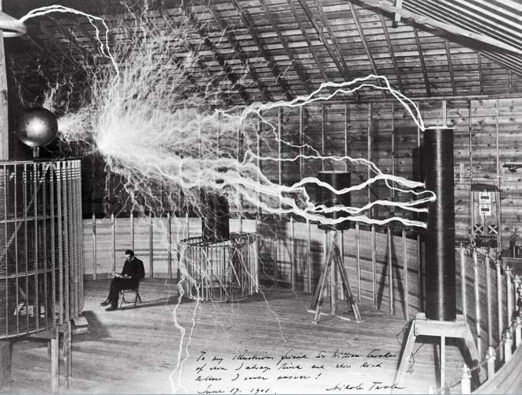

Nikola Tesla

Publicity photo of Nikola Tesla in his laboratory in Colorado Springs, Colorado, in December 1899.
Tesla posed with his “magnifying transmitter,” which was capable of producing millions of volts of electricity.
The discharge
shown is 6.7 metres (22 feet) in length.
Wellcome Library, London
"Nikola Tesla, (born July 9/10, 1856, Smiljan, Austrian Empire [now in Croatia]—died January 7, 1943, New York, New York, U.S.)
Serbian American inventor and engineer who discovered and patented the rotating magnetic field, the basis of most alternating-current machinery.
He also developed the three-phase system of electric power transmission.
He immigrated to the United States in 1884 and sold the patent rights to his system of alternating-current dynamos, transformers, and motors to George Westinghouse.
In 1891 he invented the Tesla coil, an induction coil widely used in radio technology."
https://www.britannica.com/biography/Nikola-Tesla